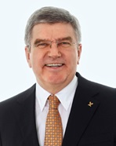

國際奧會主席的話
親愛的2015年奧林匹克日的與會者
感謝你們參與奧林匹克日的慶祝活動，成為這個全球活動的一份子。
如同各位一樣，全世界的人們都在分享奧林匹克價值所揭櫫的運動與友誼的喜悅中，紀念奧林匹克活動的誕生。
你們有些人參與了奧林匹克路跑，也有些學習了新的運動或享受奧林匹克主題的文藝活動。
奧林匹克日是屬於所有人的，不分年齡或運動能力，最重要的是讓那些懶人離開他們的沙發。
雖然奧林匹克日是為了紀念一個歷史事件，但是其目標怯是放眼於未來，尤其是年輕的族群。
奧林匹克日提供契機，提醒人們運動不是僅限於觀賞的樂趣，我們希望能啟發所有人動起來並享受運動。
感謝你們使自己離開了你們的沙發，請鼓勵其他人也一起響應 - 不僅是在奧林匹克日，而是融入你們的更健康且更快樂的生活中。
享受今日，並請將奧林匹克日的活力貫穿全年。
湯瑪士．巴哈 國際奧會主委
如同各位一樣，全世界的人們都在分享奧林匹克價值所揭櫫的運動與友誼的喜悅中，紀念奧林匹克活動的誕生。
你們有些人參與了奧林匹克路跑，也有些學習了新的運動或享受奧林匹克主題的文藝活動。
奧林匹克日是屬於所有人的，不分年齡或運動能力，最重要的是讓那些懶人離開他們的沙發。
雖然奧林匹克日是為了紀念一個歷史事件，但是其目標怯是放眼於未來，尤其是年輕的族群。
奧林匹克日提供契機，提醒人們運動不是僅限於觀賞的樂趣，我們希望能啟發所有人動起來並享受運動。
感謝你們使自己離開了你們的沙發，請鼓勵其他人也一起響應 - 不僅是在奧林匹克日，而是融入你們的更健康且更快樂的生活中。
享受今日，並請將奧林匹克日的活力貫穿全年。
MESSAGE
for 2015 Olympic Day
Dear Participants of Olympic Day 2015,
Thank you for joining this celebration of Olympic Day. You are part of a growing global event.
Like you, people around the whole world are commemorating the founding of the Olympic Movement by sharing the joy of sport and fellowship rooted in Olympic values.
Some of you are participating in Olympic Day runs. Others are learning new sports, or are enjoying Olympic-themed cultural events.
Olympic Day is for everyone, regardless of age or athletic ability. The important thing is to get the couch potatoes off the couch.
Although Olympic Day commemorates an historic event, its goals are aimed at the future and particularly at young people. Olympic Day is an opportunity to remind people that sport is not just for watching. We want to inspire all people to get active and to have fun.
Thank you for doing your part by getting off the couch. Please encourage others to do the same—not just on Olympic Day, but as part of a healthier and happier life.
Enjoy the day, and please keep the spirit of Olympic Day alive throughout the year.
Like you, people around the whole world are commemorating the founding of the Olympic Movement by sharing the joy of sport and fellowship rooted in Olympic values.
Some of you are participating in Olympic Day runs. Others are learning new sports, or are enjoying Olympic-themed cultural events.
Olympic Day is for everyone, regardless of age or athletic ability. The important thing is to get the couch potatoes off the couch.
Although Olympic Day commemorates an historic event, its goals are aimed at the future and particularly at young people. Olympic Day is an opportunity to remind people that sport is not just for watching. We want to inspire all people to get active and to have fun.
Thank you for doing your part by getting off the couch. Please encourage others to do the same—not just on Olympic Day, but as part of a healthier and happier life.
Enjoy the day, and please keep the spirit of Olympic Day alive throughout the year.